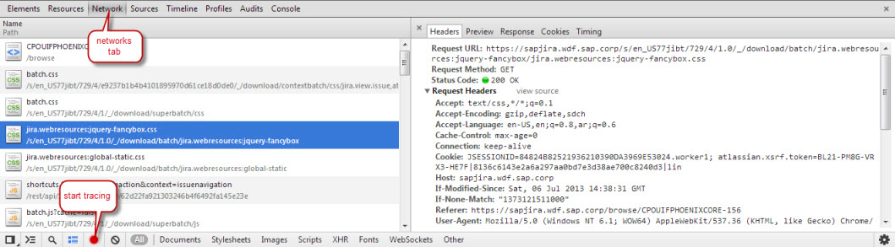

Problem Analysis in SAPUI5
This page gives some hints what to do when encountering problems during development of SAPUI5 application. The current hints are mainly targeting beginner-level issues.
Tools you can use
Basically, for all problem analysis you would like to do, you need to know how to start debugging in the corresponding browser.
Note that not all browsers behave exactly similarly, neither in rendering or event handling, nor in the debugging tools they provide.
You can start developing with any of the browsers, just keep in mind that it is a good idea to regularly check if your code also works in the other browsers from an early stage of development.
On most modern browsers, you can bring up the development tools by hitting F12. Of course, there is always the option to start them from the browser menu, too.
Below you find details to all our supported browsers:
- Chrome comes with excellent built-in debugging capabilities.
- Firefox has built-in developer tools, too, but we nevertheless recommend installing the Firebug extension, since it offers more functionality.
- Internet Explorer also has built-in developer tools, even if they are lacking some functionality or rather making some things a little more complicated then neccessary. For example, there is an extra button you need to explicitely hit in its developer tools to start debugging, whereas in other browsers you just have to open the tools. If you have a version of Visual Studio available, there is a description on how to use it for debugging applications for IE: Debug Web Apps with Visual Studio.
- Safari also comes with a native set of tools. For remote debugging on mobile devices, see details below.
Debugging
All current browsers allow setting JavaScript debugging breakpoints in their development tools. (In Internet Explorer the selection of the correct file can be tricky when it is loaded using Ajax requests because the file name is not listed. And as mentioned above, script debugging needs to be turned on explicitly, in other browsers setting the breakpoint is sufficient.)
Once script execution is halted, variables can be inspected (and usually modified, but Chrome has some restrictions there) and code can be executed step-by-step.
For a more extensive tutorial on debugging in browser tools, we suggest also reading a basic tutorial like e.g.
JavaScript Debugging in Chrome
If you are coming from an ABAP environment, you can also have a look at Debugging JavaScript for ABAP developers
Remote Debugging on Mobile Devices
If you are not solely developing for the desktop, you'll want to make sure your application is also running smoothely on mobile devices.
To ensure this, the best approach is to debug remotely on the target devices instead of using one of the simulators around, because all of these have some limitation or other. You can e.g. only really make a reliable statement about the performance of your application on, say, and iPad, if you have tested it on an iPad.
If you then encounter problems during your tests, you can fortunately do remote debugging from your PC or MAC, since there is no such thing like debugging tools in mobile browsers.
Depending on whether you are trying to debug on an Android device or on an Apple device, steps vary a bit.
Android devices
There is an excellent How-To-Guide by Google on how to set up things to make remote debugging from your PC possible:
Google Article on Remote Debugging for Android Devices.
Apple devices
Prerequisites: You need to have an iOS version ≥ 6.n on your device to use remote debugging as described below, otherwise you'll have to fall back to debugging by looking at the console output or using the simulator that comes with the iOS SDK. Furthermore, you have to connect your device to a MAC, this will only work with Safari.
Apple has provided a step-by-step guide on how to enable remote debugging for its devices here:
Safari Web Content Guide
Debugging Tipps and Tricks
I only see minified sources/scrambled code from UI5 sources, how can I see the “real” code behind it?
You need to switch on the "debug sources" option in the browser. Usually, this option can be enabled in different ways:
- Add sap-ui-debug=true as parameter to your URL.
- Use the Support Tool to toggle Debug Sources on (and off)
Useful URL parameters (without claim to completeness)
| Parameter | Explanation |
| sap-ui-debug | As mentioned above, sap-ui-debug=true lets you switch to debug sources, so you do not only see the minified code in the debugger |
| sap-ui-language | language switch, e.g. en-US |
| sap-ui-theme | theme switch, e.g. sap-ui-theme=sap_goldreflection or sap-ui-theme=sap_bluecrystal |
Debugging using the support tool
The Support Tool can be used to get additional information about the UI5 Application.
It also provides a tree-structure with all existing controls which can be used to edit properties at runtime, view binding infos and set breakpoints on instance level.
Logging and Tracing
Logging from your application
While SAPUI5 does a lot of logging which you can use for debugging purposes, your application code can also do logging. There is a bunch of jQuery.sap.log.* (or $.sap.log.*) functions available to log with different severity levels:
$.sap.log.error("This should never have happened!");
This will issue a log statement with "error" severity, so browsers will usually mark it red and display it like a JavaScript error.
$.sap.log.info("FYI: something has happened");
This will log an information which is not highlighted and will not be displayed when your log console is set to filter for errors only.
Locating the Logger output
Internet Explorer (in the "Developer Tools"), the Chrome and Safari developer tools, the Firefox extension "Firebug" all offer a console API which can be used for logging. In case one of them is present, all log output is additionally directed to this console:

Using the Network Trace
If you see that some content in your application is missing, it is always helpful to also look at the network trace of your page to see whether there are any occurrences of errors like 404 (page/file not found) or 500 (internal server errors). This can also tell you e.g. if an OData request has failed or if resources are not being loaded because of a wrong URL that is used.
To start a network trace e.g. in Chrome, you need to open the developer tools and switch to the Network tab. At the bottom of this tab, there is a button bar where you can start and stop tracing.
To see which network requests are sent from your application, you have to start the trace and then reload the page. Once it has finished loading, you will see a list of all requests that were triggered, along with the request status (and highlighting to show errors). Clicking on a request in the list will show you further details, like headers that were sent or the response that was retrieved.
(see screenshot below).

What if…
…an empty page comes up
- Most probably a JavaScript error has happened. JavaScript errors stop all subsequent execution. You should check the browser's JavaScript console or the Firefox Error Console.
- If there was no error: did you add the UI controls to an existing element in the page? (with placeAt(…))
- If you did, check the browser's DOM inspector: does this "existing element" actually contain child HTML which resembles the controls you have added? In this case check the style of the HTML elements around that place: are they set to be visible? What are the dimensions? The height (or width) may have collapsed to zero, making the element invisible. This happens e.g. when an HTML element has no height set and a child element has the height set to "100%", because this refers to the height of the parent element, which has an undefined height (it "wants" to be as tall as its content and the content wants to be as tall as its parent…)
…some content/control is not visible
- Check the DOM Inspector of your browser whether the HTML is in the document or not (you may search for the control ID or drill down along the control hierarchy). Often in such cases the height may have collapsed to zero, making the element invisible. This happens e.g. when an HTML element has no height set and a child element has the height set to "100%", because this refers to the height of the parent element, which has an undefined height (it "wants" to be as tall as its content and the content wants to be as tall as its parent…)
- Is the control (and its parents) set to "visible"?
- If you are making use of UI5's databinding functionality, are the elements properly bound? You can also use the Support Tool to check this.
…some content/control is set to 100% height, but this setting does not seem to work
- To which height are the parent elements set? In CSS a percentage height only works when the parent has a defined height. In most such cases the parent has no height set or again a percentage height, but one ancestor has no defined height. The problem is that the parent "wants" to be as tall as its content and the content wants to be as tall as its parent. In CSS the result is that the height collapses to the minimum height accomodating all content.
- Some typical controls which adapt their height to the content are the sap.ui.core.View (all types) and the sap.m.Page controls. By setting the View height to any fixed height or setting the View and all ancestors to 100% height, you can define its height and 100%-height children will work fine. And the Page control can be set to enableScrolling: false: when scrolling is allowed, the scroll container in the Page control grows with the content, but when you want to set the content to 100% height scrolling does not make sense because by definition there is no scrolling when the content is as tall as the available space…
…some proportions of a rendered control look odd…
- Check if the doctype is set correctly in your page. Some controls are not rendered correctly if the doctype is missing or is not correct, e.g. the table headers become exceptionally high.
…the styling of an application / of some control looks odd…
- Are there any custom styles you have added for your application? If so, they might collide with styling that comes with the theming libraries. One approach is to inspect the element which has the wrong styling within the browser debugging tools. On the HTML tab, you can usually also see which styles are applied to a DOM element. If there are styles in the list that your application adds, try to disable them in the debugger to see whether this solves the problem. (Hint: all UI5 specific css classes and ids usually start with a sapUi prefix, e.g. sapUiButton).
- If this does not help, it's also a good idea to look for any inline styles that may be applied to the element within the HTML code.
- If the above does not solve the problem and it does not seem to be an application specific styling, please open a CSN message on our component.
What do I do if the console shows an error saying something is wrong with sap-ui-core.js, line 2
First of all, we are not claiming that this is impossible. Experience shows us, however, that most often the error originates elsewhere. To try and track down the problem, it is always a good idea to activate the UI5 debugging sources in a first step, so you do not only see minified and scrambled code. (see above)
This will usually let you see at least in more detail where the message is thrown as well as give you the opportunity to set a breakpoint at the corresponding line. From there, you can dig deeper into the problem and also have a look at the call stack to see where it has started.